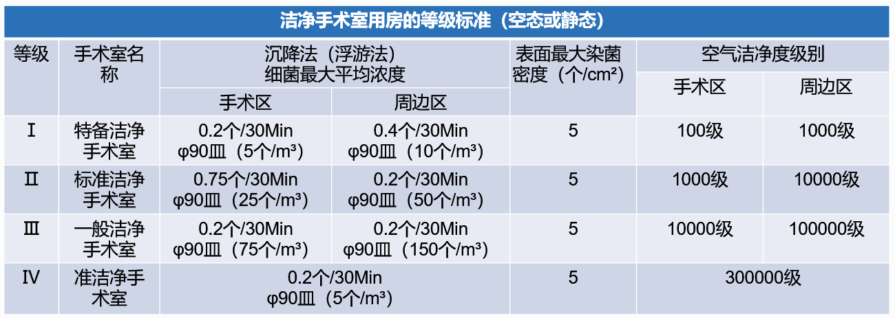
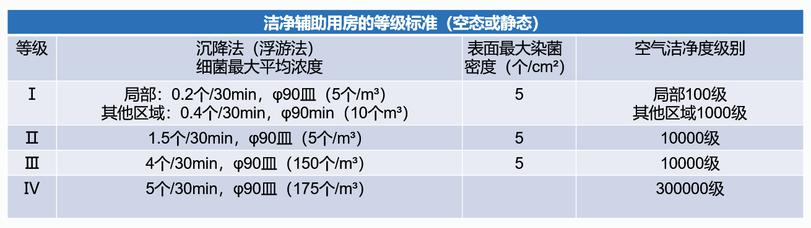

一.洁净手术室
1.洁净手术室是采用空气洁净技术，对手术室内微生物及微粒污染采取不同程度的控制，从而达到各级手术室空气洁净度的需求，并提供适宜的温、湿度，创造一个清新、舒适、洁净度高的手术空间环境。
二.洁净手术部的建筑环境
1.新建洁净手术部在医院内的位置，应远离污染源，并位于所在城市或地区的最多风向的上风侧；当有最多和接近最多的两个盛行风向是，则应在所有风向中具有最小风频风向的对面确保手术部的位置。
2.洁净手术部应自成一区或独占一层，防止其他人流、物流干扰，并有利于保证手术部的空气环境质量。
3.宜与其他密切关系的外科护理单元，重症监护室临近或同层，宜与有关的放射科、病理科、消毒供应室、血库等路径最短。
4.洁净手术部不宜设在首层和高层建筑的顶层。
三.洁净手术部平面布置及功能分区模式
1.平面布置原则
a.洁净手术部必须为洁净区与非洁净区。洁净区与非洁净区之间必须设缓冲室或传递窗。
b.洁净区内宜按对空气洁净度级别的不同要求分区，不同区之间宜设置分区隔断门。
c.洁净手术部的平面布置应对人员及物品（敷料、器械等）分别采取有效的净化流程。净化程序应连续布置，不应被非洁净区中断。
d.洁净手术部的内部平面和通道形成应符合便于疏散、功能流程短捷和洁污分民的原则。
2.平面布置模式
手术部平面可有多种布局方式，应根据医院的建筑规模、管理模式进行设计。一般可归纳为；端头布置、中心布置、侧向布置等；根据手术部的通道设置，可分为：单通道布置、双通道布置、多通道布置；根据手术部人流、物流线可分为：外廊回收型、外廊供给型、中央供给型。
3.洁净手术室面积
| 手术室 | 面积㎡ | 人数 |
| 超大型手术室 | >45 | 12人以上 |
| 大型手术室 | 35-45 | 10-12 |
| 中型手术室 | 25-35 | 8-10 |
| 小型手术室 | 20-35 | 6-8 |
4.洁净手术室数量确认
a.一般经验数据按每50张病床或每25张外科病床设一间手术室。没间手术室日手术平均为2-3例。也可根据各医院不同的医疗专业、统计出实际需求及长期发张要求来确定手术室数量。
b.也可根据下列公式计算；
式中：A=B*365/(T*W*N)(A≥2)
A-手术室数量 B-需要手术的病人总床数 T-平均住院时间（d）(按卫健委规定，为15d)
W-手术室全年工作日（D） N-平均每个手术室每日手术台数
5.洁净手术室及主要洁净辅助用房等级划分
a.洁净手术室分级
| 等级 | 手术室名称 | 手术切口类别 | 适用手术提示 |
| Ⅰ | 特别洁净 | Ⅰ | 关节置换、脏器移植及脑外科、心脏外科和眼科等手术中的无菌手术 |
| Ⅱ | 标准洁净 | Ⅰ | 胸外科、整形外科、泌尿外科、肝胆胰外科、骨外科及取卵移植手术和普通外科中的一类无菌手术 |
| Ⅲ | 一般洁净 | Ⅱ | 普通外科出去一类切口手术妇产科手术等 |
| Ⅳ | 准洁净 | Ⅲ | 肛肠外科及污染类手术 |
b.主要洁净辅助用房分级
| 等级 | 用房名称 |
| Ⅰ | 需要无菌操作的特殊实验室 |
| Ⅱ | 体外循环灌注准备室 |
| 消毒准备室 | |
| 刷手间 | |
| 预麻室 | |
| 一次物品、无菌辅料及器械与精密仪器的存放室 | |
| 护士站 | |
| 洁净走廊 | |
| Ⅲ | 重症护理单元（ICU） |
| 恢复（麻醉苏醒）室与更衣室（二更） | |
| Ⅳ | 洁净走廊 |
6.洁净手术部用房等级标准
注：1.浮游法的细菌最大平均浓度采用括号内数值，细菌浓度是直接所测得结果，不是沉降法和浮游法相互换算的结果
2.Ⅰ级眼科专用手术室周边区按10000级要求。
注：1.浮游法的细菌最大平均浓度采用括号内数值，细菌浓度是直接所测得结果，不是沉降法和浮游法相互换算的结果
四.净化工程
icu是英文intensiveCareUnit的缩写，意为重症加强护理病房。重症医学监护是随着医疗护理专业的发展、新型医疗设备的诞生和医院管理体制的改进而出现的一种集现代化医疗护理技术为一体的医疗组织管理形式。
ICU是把危重病人集中起来，在人力、物力和技术上给与最佳保障，以期得到良好的救治效果。
ICU净化工程包括装饰装修工程、净化空调工程、强弱电工程、给排水工程及医用气体工程
Copyright © 2022 河北利康 All rights reserved. 赣ICP备11005027号